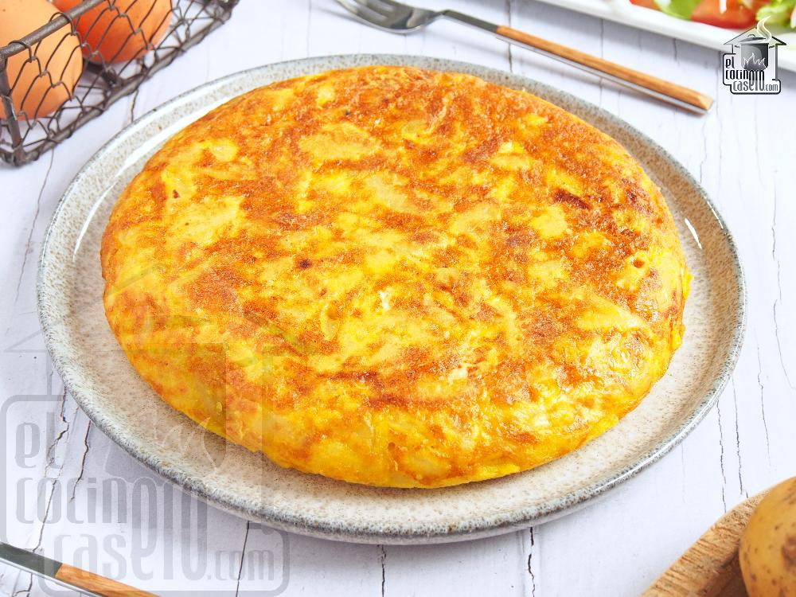

Las Recetas de David
postres y dulces
tapas y aperitivos
Vegetales
Arroz al horno
El popular y tradicional arroz al horno valenciano
ver la receta
Natillas caseras
Las natillas caseras de la abuela de toda la vida
ver la receta
tortilla de patata
tortilla de patata

ver la receta
 ver la receta
ver la receta
 ver la receta
ver la receta